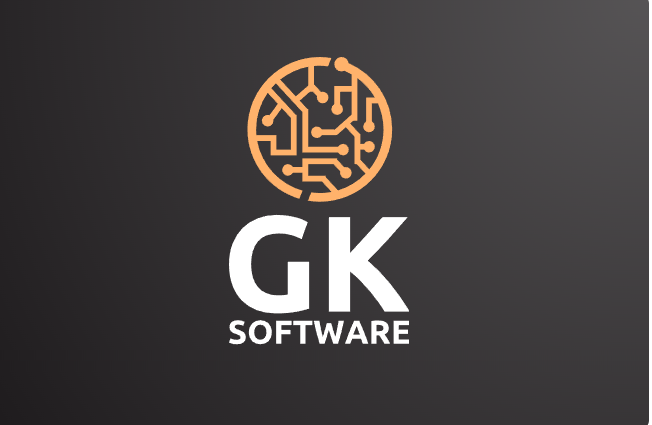

GK Software · assinatura
A lockup abaixo é a sua, intacta — o PNG original com a faixa da assinatura reconstruída por interpolação do fundo. Só a assinatura é renderizada por cima, e é a única coisa que varia entre os cartões. O tracking de cada variante é calculado para fechar exatamente na largura-alvo.
| elemento | largura | altura | eixo |
|---|---|---|---|
| símbolo | 145px | 145px | A |
| GK | 180px | 98px | B |
| SOFTWARE | 180px | 24px | B |
| assinatura (atual) | 145px | ~7px | A |
Sua lockup trabalha com dois eixos de largura: 145px (símbolo) e 180px (lettering). Nada é centralizado por acaso — “SOFTWARE” tem o tracking calculado para bater a largura do “GK”, e a assinatura para bater a largura do círculo. É essa disciplina que faz a peça parecer resolvida.
Reprodução do estado atual: frase completa presa ao eixo do símbolo, na cor apagada do original.
Original (PNG)
assinatura queimada na imagem
Reproduzida em HTML

Ideias que viram operaçãotracking calculado: …
Se as duas parecem iguais, a base está fiel — daqui pra frente só a assinatura muda.
Ligue os eixos para ver a diferença estrutural: a opção 1 troca a assinatura do eixo A para o eixo B, a opção 2 continua no eixo A com menos caracteres.
1 · Eixo do lettering
tracking calculado: …
2 · Frase curta
tracking calculado: …
3 · Só a cor
tracking calculado: …
Opção 1 ganha corpo sem inventar medida nova — a assinatura passa a fechar com o bloco GK/SOFTWARE, e a lockup fica com dois eixos em vez de dois-e-meio. Opção 2 mantém a amarração com o círculo, que é mais elegante, mas “em operação” perde o verbo que fazia o trabalho. Opção 3 é a intervenção mínima: não toca em nada estrutural e ainda assim resolve boa parte da leitura.
O original está em #9A7250 — não é o pêssego do símbolo (#FFB26B), é uma versão bem mais apagada. Aqui, opção 1 com três tratamentos.
Apagada (atual)
Pêssego do símbolo
Branco 72%
Branco a 72% lê melhor e deixa o pêssego exclusivo do símbolo — a cor da marca fica com um dono só. O pêssego cheio compete com o círculo e puxa o olho pra baixo; o apagado é o que você já tem.
Opção 1 nos tamanhos reais de aplicação. É aqui que se decide a partir de que largura a assinatura sai da peça.
Compare os dois últimos: no ponto em que a assinatura vira uma listra cinza, a versão sem ela fica mais limpa. Esse é o limite que define a versão reduzida da marca.